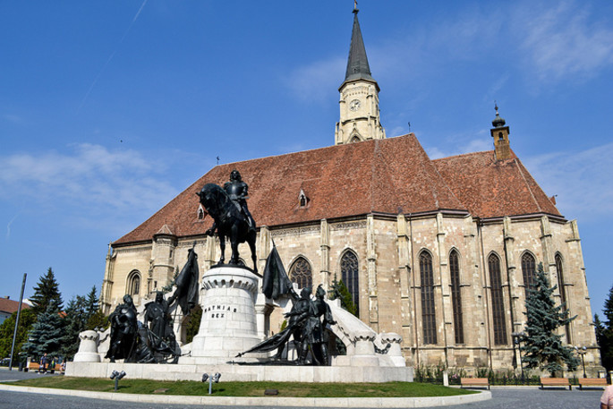
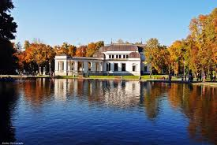
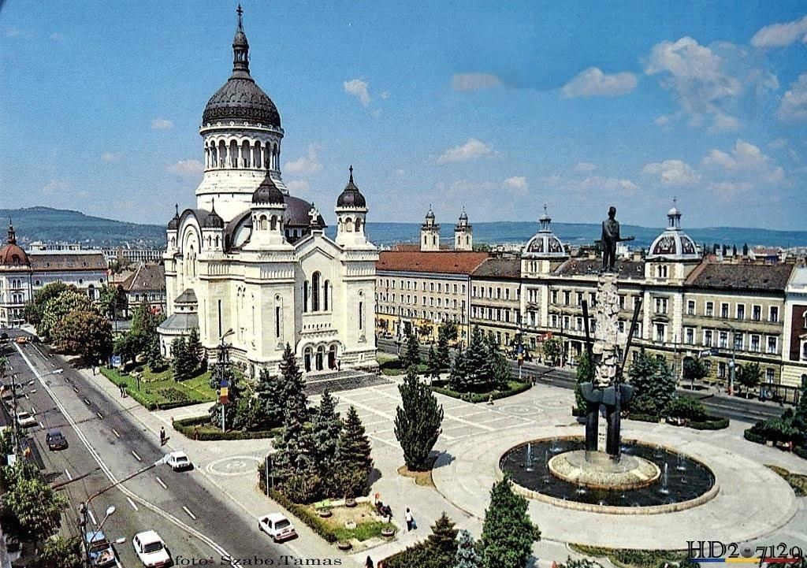

With a rich history, Cluj Napoca is a multicultural city, a blend of cultures and religions. Each place tells a story that you are invited to discover. Explore the city’s landmarks and uncover what was called in medieval times the ‘Treasure City’ of Transylvania.

- 1. Union Square
- The Central square of the city, the Union Square, is the place where the past modern times. Hidden under a glass surface, the ruins of the Roman citadel Napoca represent the beginnings of the 2,000 years old city of Cluj Napoca. Opposite, the monumental statue of Matthias Corvinus attracts the visitors, who can’t leave without a picture with the massive monument. Behind, the Saint Michael Church dominates the square. If you are around on a Saturday, make sure you don’t miss the organ concert. The old town hall, the National Museum of Art, the Josika Palace, and the Rhédey Palace can also be found here.
- 2. Citadel of Cluj
- Nowadays, the Citadel of Cluj is next to an important tourist point, from where you can admire the city and a romantic place, where many couples walk on this plateau, especially in the evening. It is said that every couple of the city of Cluj Napoca, was at least once on a walk on the hill Cetățuia. Besides the massive Hotel Belvedere, on Cetățuie there are also alleys where you can walk, a terrace with a bar from where you can admire the city. At the back of the fortress is part of the earthen wall of the old fortification, a children's park with a night basketball court and a football field. Below the park you reach the intersection with 7 streets, one of the only intersections in Europe of this kind.
- 3. Central Park
- The Central Park is one of the main green spaces in Cluj-Napoca, founded in 1827. The Association for the Welfare of Women (Jóltevő Asszonyi Egyesület) rented the land to establish a recreation place. In 1830, after the completion of the landscaping works, the People's Park (Népkert) was opened to the public. Since 1860 the Park Administration has been taken over by the Park Committee led by Count Imre Mikó. Since 1865, the Sétatér-Egylet Park Association has been established, which dug the lake and built the pavilion of music. In 1871 the Skating Association rented the lake. Between 1896 and 1897, the skating pavilion and kiosk with the beautiful fountain were designed by Lajos Pákey. The skating pavilion is located on the lake and the frozen lake has been a skating rink until the early 90's.
- 4. Avram Iancu Square
- One of the most recent squares built in Cluj, the Avram Iancu Square impresses with its monumental buildings. Here, religion and culture meet. On one side of the square is the National Opera and Theatre of Cluj, an eclectic building of the 20th century. Masterpieces like Don Juan, written by Molière or Romeo and Juliet written by Shakespeare are played on the theatre’s stage. Facing the opera is the statue of Avram Iancu and the Orthodox Cathedral. Nothing like a Catholic church, the Orthodox Cathedral reminds us of the Saint Sophia Mosque of Istanbul, a former Christian church. But what is even more impressive is the interior. Step inside and be mesmerized.
 
<--------------------------- Central Park
Avram Iancu Square ------------------------------>